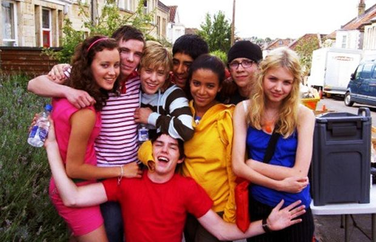

Detalles de la producción de la serie
¿Como se creo la serie?
Skins fue creada por Bryan Elsley y Jamie Brittain. La serie fue producida en el Reino Unido y transmitida por el canal E4.
Una de las ideas principales de los creadores era mostrar la vida adolescente de una manera más realista que otras series juveniles.
Caracteristicas de la produccion
- Elenco joven: La serie se destacó por tener un elenco de actores jóvenes, muchos de los cuales eran nuevos en la industria.
- Temas controvertidos: Skins abordó temas como el consumo de drogas, la sexualidad, la salud mental y otros aspectos de la adolescencia que a menudo se evitaban en otras series.
- Formato innovador: Cada dos temporadas se introducía un nuevo elenco de personajes, lo que permitía explorar diferentes historias y perspectivas.

Gracias a estas decisiones, la serie logró conectar con muchos espectadores jóvenes y se convirtió en una producción muy influyente.